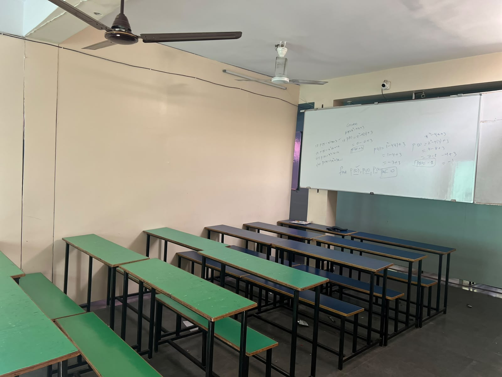

Established academic experience
More than 25 years supporting students through their studies.
Tuition for SSC Classes 6–10 and Intermediate subjects, with a special focus on Mathematics.
Students Helped
Experienced Faculty
of Academic Experience
Experience you can see. Focus you can choose.
More than 25 years supporting students through their studies.
A track record built across more than 100,000 students.
A faculty team supporting school and Intermediate learning.
Focused support for the SSC syllabus, alongside Classes 6–9.
All subjects for Classes 6–10 and Intermediate 1st and 2nd year.
Intermediate Mathematics support for IA, IB, IIA and IIB.
All subjects, including regular and private tuition.
All subjects, with additional focus on Mathematics.

MSc, BEd in Mathematics
30+ years of teaching experience. Director of ZK Educational Academy.
25+ years of experience
Biology faculty
25+ years of experience
Hindi faculty
Classrooms and learning spaces at ZK Academy.

The academy offers SSC tuition for Classes 6–10, and Intermediate Mathematics IA, IB, IIA and IIB. SSC Regular and Private tuition are available across subjects.
Mathematics tuition is available for IA, IB, IIA and IIB.
SSC tuition is offered for all subjects. Ask the academy about the subjects, class groups and current availability.
The academy emphasizes a student-focused environment. Contact the academy to discuss a student's needs.
Use the enquiry form below to share the class or program you are interested in. The academy can follow up with current timings and admission details.
Share your enquiry with ZK Academy.